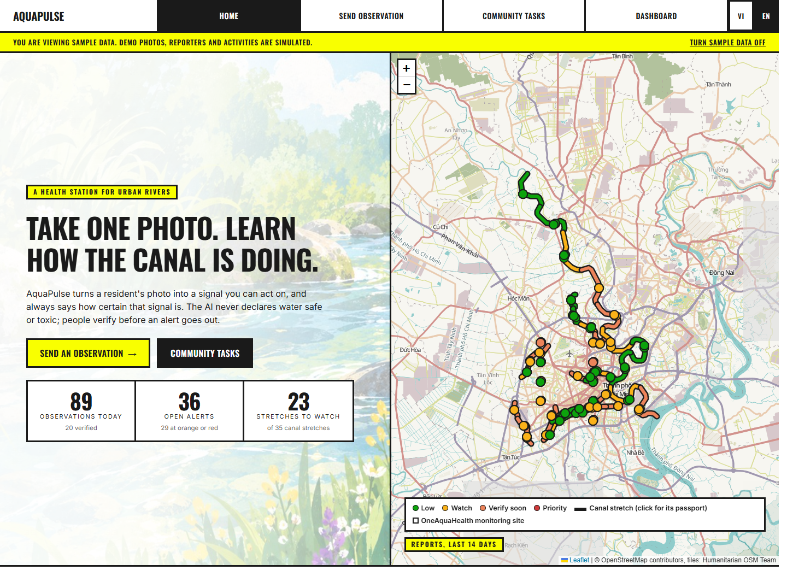
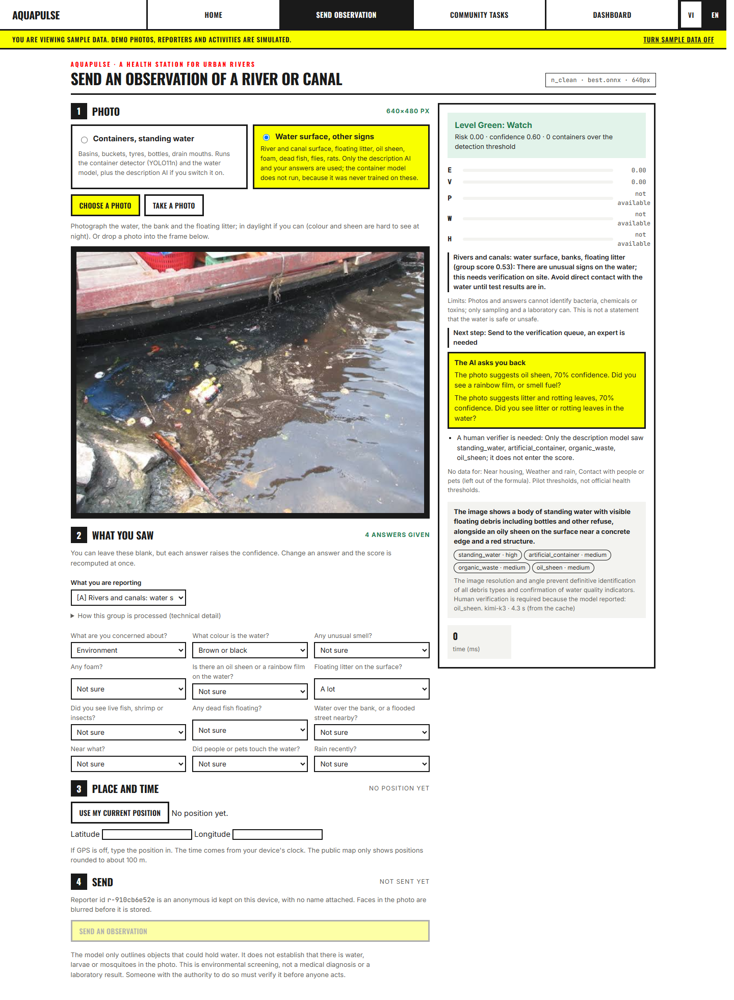
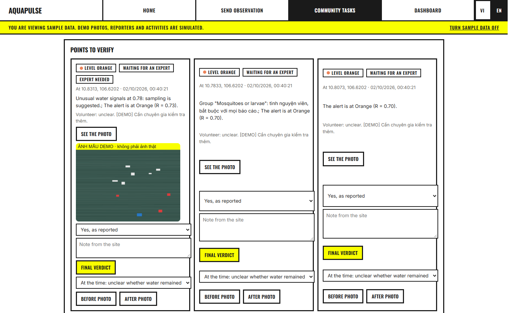
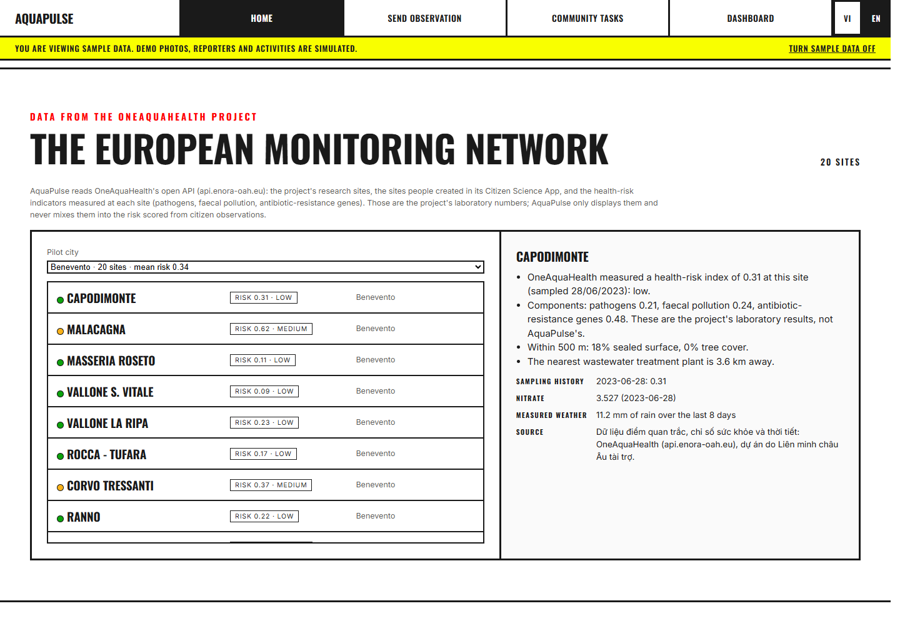
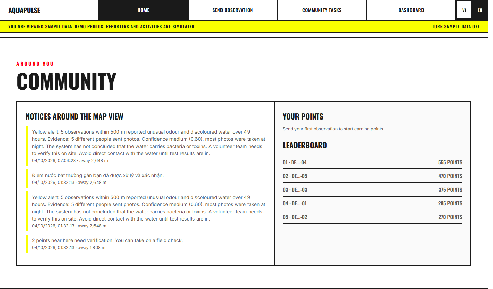

01. Home and river map
Explore the canal map, recent observations, active alerts, and the stretches that need attention.
Download PNG1440 × 1054Ten English screenshots. Click an image to view it at full resolution. Captions are under 140 characters.
Download all 10 screenshots (ZIP)
Explore the canal map, recent observations, active alerts, and the stretches that need attention.
Download PNG1440 × 1054
Upload a photo, answer what you saw, review the analysis, and save an observation for follow-up.
Download PNG1440 × 1961
Check a canal stretch's risk indicators, observation history, rainfall, and supporting evidence.
Download PNG1440 × 2415
Run YOLO11n on discarded tyres beside the water and review the detection with the photo analysis.
Download PNG1440 × 2228
Review reports and alerts, add verification notes, and decide which cases need further attention.
Download PNG1440 × 879
Browse cleanup and checking missions, see deadlines and reward points, and sign in as a verifier.
Download PNG1440 × 1531
Compare report trends, verification progress, treatment results, and areas that need attention.
Download PNG1440 × 3109
Explore monitoring sites and their reference measurements, sampling history, and weather context.
Download PNG1440 × 994
See neighborhood notices and the leaderboard, with points awarded for verified contributions.
Download PNG1440 × 844
Ask about a canal stretch and see the evidence, uncertainty, and practical steps behind each answer.
Download PNG1440 × 844